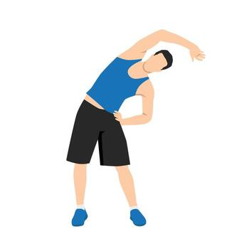
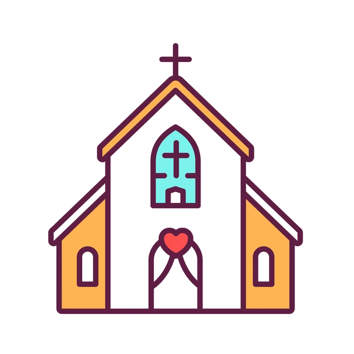

I'm an aspiring Full Stack Web Developer on a journey to land a career in some type of development position, whether that be front-end or back-end development even Full Stack. I enjoy the process of creating something and seeing the final product, or troubleshooting an issue to its resolution. There's a level of satisfaction in those moments that generates a rush of dopamine that causes me to come back for more. There's nothing better than bringing a vision to life or solving that bug that's been a hindrance for days, possibly weeks!
I have a lot to offer as a person, I strive to always do my best, while staying humble with a learners mindset. I know that I'll never learn everything, and that I'm always growing and that everyone I encounter has something to teach me. I also believe in Servant Leadership, that being a leader means being a servant to those I lead and even those I work alongside. I'm eager to learn and to grow, I enjoy the challenge of learning something new.
When I'm not honing my skills in Web Development, I do the following:
Spend time with my family
Play my drums
Exercise

Go to church on Sunday's which I'm usually am drumming for my church.

Always looking for ways to grow as a person.
I'm grateful for the love and support from my family throughout this journey. My wife handling our children as I focus on learning and growing, and encouraging me. I'm thankful to have the wonderful kids I do, as they also provide a level of support and encouragement to do something I've never thought I could achieve.